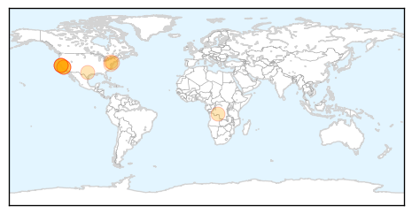
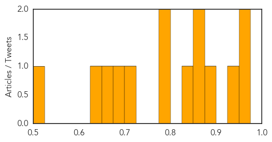
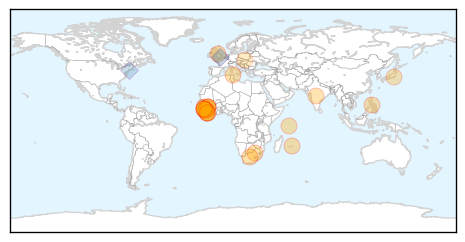

Measles
30-Day Web Trend
0 alerts, 1 warnings

30-Day Twitter Trend
0 alerts, 0 warnings

Article Locations
Article Confidences
Top Articles:
- 0.971
- Berkeley: Health care officials hope more vaccinations stop spread of measles
- 0.966
- Measles Health Alert
- 0.933
- Measles confirmed in UC Berkeley student, community encouraged to vaccinate
- 0.884
- Health Officials Confirm a UC Berkeley Student Has Measles
- 0.864
- Pennsylvania vaccination rates among worst in nation
- 0.860
- DRC: Katanga measles epidemic keeps worsening - Democratic Republic of the Congo
- 0.847
- Back-to-school preparations often exclude vaccines
- 0.798
- Berkeleyside
- 0.786
- UC Berkeley measles patient traveled to Contra Costa County while contagious
- 0.720
- Incubate learning, not infections
- 0.679
- Washington woman’s measles death is first in US since 2003
- 0.651
- UC Berkeley student tests positive for measles
- 0.627
- In Our View: Keep Our Students Safe
- 0.513
- UC Berkeley student diagnosed with measles Monday exposed community members
Top Tweets:
-
No tweets found for Sep 01, 2015
Ebola
30-Day Web Trend
0 alerts, 0 warnings

30-Day Twitter Trend
0 alerts, 0 warnings

Article Locations
Article Confidences

Top Articles:
- 1.000
- Burundian refugee not killed by Ebola: Tanzanian gov't
- 1.000
- Vaccine trial expands to Sierra Leone due to new Ebola case
- 1.000
- VIRAL SIEGE: Ebola Fear Campaign & Cover-Up Masks Truth About Outbreak
- 0.999
- 50 people quarantined after new Ebola death in S Leone
- 0.999
- Liberia Again To Be Declared ‘Ebola Free’ By WHO
- 0.999
- Assessing Ebola Risk
- 0.998
- WHO Director-General addresses Institute of Medicine Ebola workshop
- 0.998
- MRU countries recommend information sharing
- 0.998
- New Ebola death in Sierra Leone
- 0.997
- 50 people quarantinee after new Ebola death in S. Leone
- 0.997
- 50 people quarantinee after new Ebola death in S. Leone
- 0.987
- Experts to investigate new Ebola case in north Sierra Leone
- 0.987
- 75 Health Surveillance Officers Recruited At The Airport of Mauritius
- 0.979
- New Ebola Death in Sierra Leone Sets Back Efforts to Beat Epidemic
- 0.969
- Unions Demand Liberian Government Account for Funds as Ebola Outbreak Nears End
- 0.949
- infectious diseases
- 0.924
- Nation Home
- 0.918
- The Need for Global Health Education in Medical Training
- 0.892
- “Waves of Grace”, a story told in Virtual Reality about Ebola survival and recovery
- 0.886
- African healthcare staff that fought the disease should be honored, says Ebola-hit Nurse
- 0.860
- Pres. Sirleaf : New dev't goals have African interest
- 0.860
- S/Leone: Officials urge schools to maintain Ebola prevention measures
- 0.692
- Children go back to school in Sierra Leone but hygiene safety measures remain in place
- 0.639
- MOHS Ends District Level Operational Post Ebola Recovery Plan Workshop - Sierra Leone
- 0.516
- Villagers Extol Addaxs WASH Programme amidst Ebola
Top Tweets:
- 0.967
- Margaret Chan: we deal with ~100 outbreaks per year but the Ebola outbreak outstripped WHO's capacity. Warm-up for next flu pandemic? GHRF
- 0.859
- Sierra Leone: New Ebola death sets back efforts to beat epidemic - Yahoo News UK http://t.co/DVLI78IyYQ ebola EVD
- 0.815
- RT: BaobabForum: Emotional personal story of the Ebola outbreak in Guinea by Dr Elhadhj Ibrahima Bah. @KoinangeJeff http://…
- 0.793
- Sierra Leone News : Villagers Extol Addax's WASH Programme amidst Ebola - Awareness Times http://t.co/UXw5gNCGRa ebola EVD
- 0.772
- Risk and insurance lessons learned from the Ebola outbreak of 2014 - InsideCounsel http://t.co/jO1S8IjVSp ebola EVD
- 0.743
- Coverage of the Ebola Virus Disease Epidemic on YouTube http://t.co/J4lsLxdhBR
- 0.716
- Nigeria v S. Leone moved after ebola fears - SuperSport (blog) http://t.co/HaaFVwn8ni ebola EVD
- 0.651
- SierraLeone: 50 personnes en quarantaine après un nouveau cas d'Ebola https://t.co/mfnnuH7eFG via
- 0.560
- Liberian Ebola survivor battles prejudice in UN virtual reality film - Reuters http://t.co/7XA3OPs8RU ebola EVD
- 0.549
- Ebola Virus Outbreak Investigation SierraLeone September 28–November 11 2014 http://t.co/6JCdxyTZHR
- 0.544
- Local doctor to speak about Ebola clinics - Ithaca Journal http://t.co/yumxusTHet ebola EVD
- 0.543
- Liberian Ebola survivor battles prejudice in UN virtual reality film - Yahoo News http://t.co/i4bMLktTNz ebola EVD
- 0.518
- Ebola: Where are we now? Guinea Liberia Sierra Leone http://t.co/373pntdz99